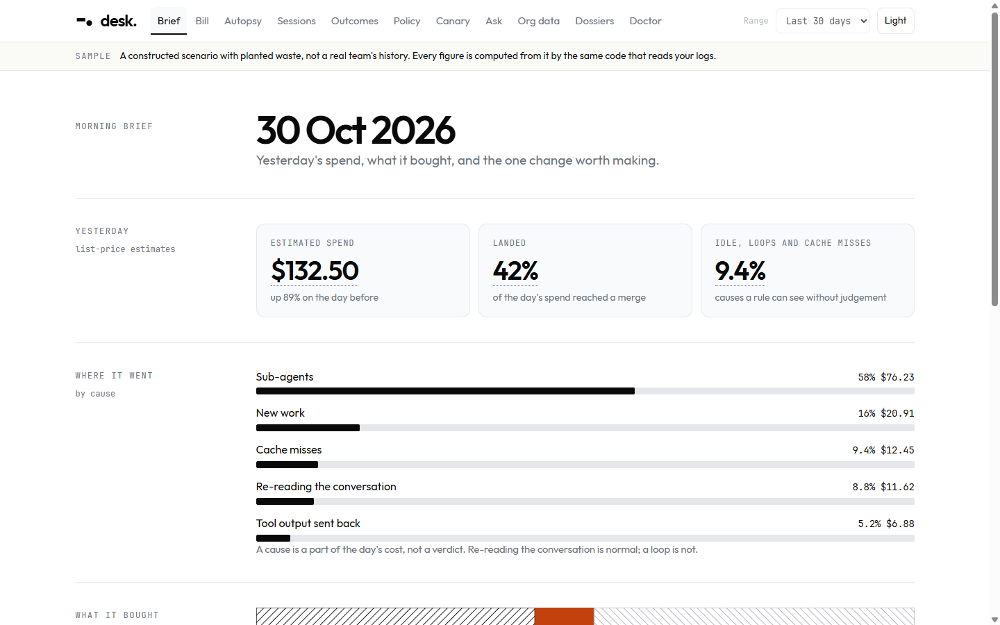
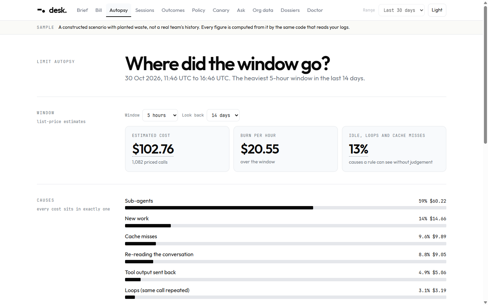
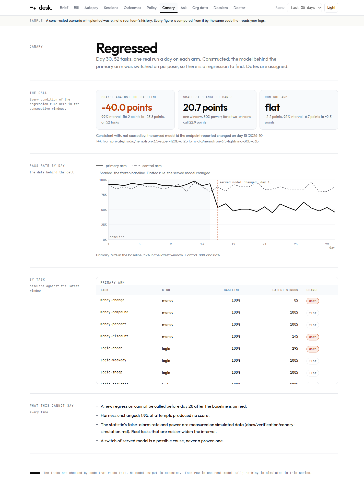
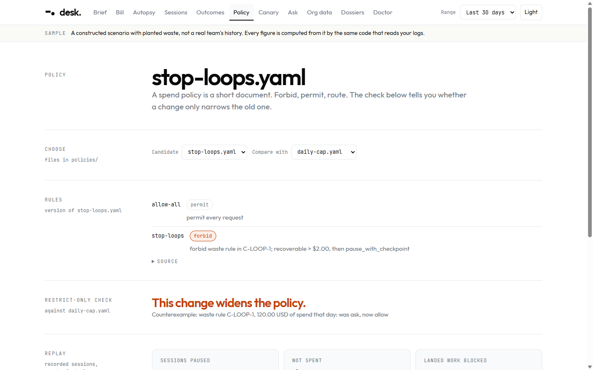
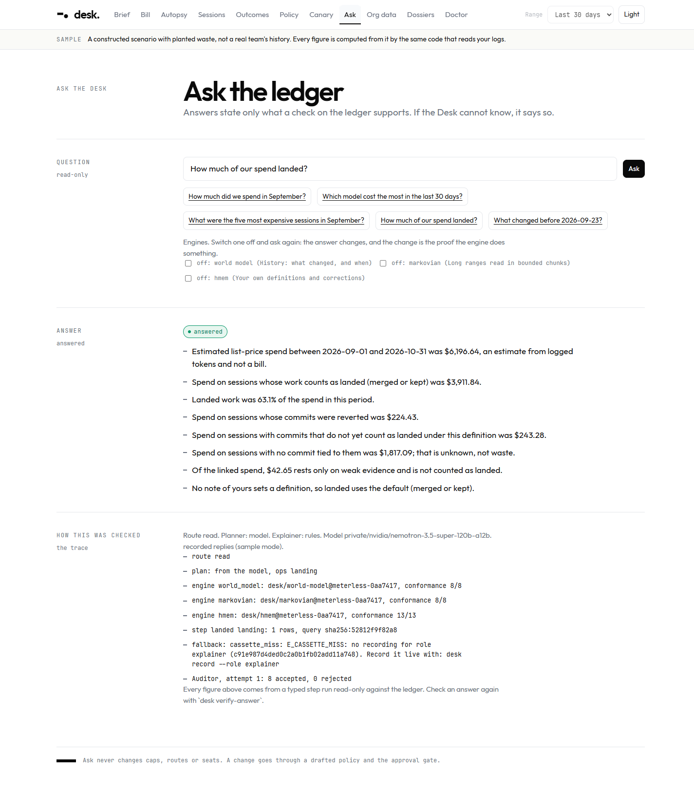
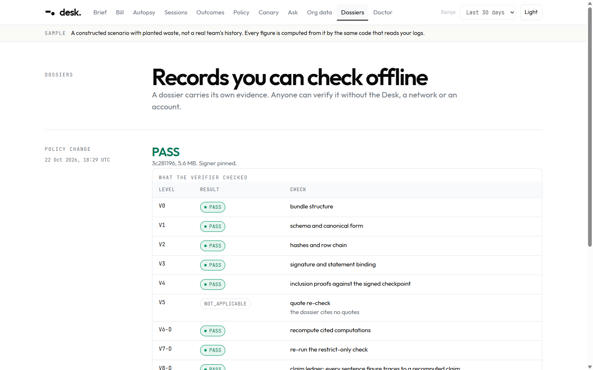

A local desk for the person who pays for AI coding agents. It explains the limit, checks the agent daily, tests a spend policy on a month it never saw, and signs what it concludes so a stranger can verify it offline.
Open Agent Hackathon 2026 / Track 3, Reasoning Architecture / Zetaris · Meterless · NVIDIA Nemotron · Cursor
An engineering lead pays for a team's coding agents, on seats and on tokens. The bill arrives as a number. The limit arrives as a message. Nothing says what the money bought.
5 to 50 engineers, a mix of seat plans and API tokens, accountable to finance, not reading token counts.
Which limits to set, which models to route where, and on what evidence.
A $6,000 overnight loop. Limits that vanish in two hours. Failed attempts that still cost. Evidence table in the repo.
Each call priced from a dated price book and placed in exactly one cause. Each session tied to a commit with a stated confidence.
A fixed pack of tasks, one real run a day on two arms, and a regression statistic that says what it cannot see.
A policy drafted from one month, replayed on the next. Landed work it would have blocked is the headline.
The decision is a cap diff. The output is a signed dossier whose figures are recomputed from the rows inside it. Cost without outcome is a meter; outcome without cost is a report.
| # | Beat | Command | Shows |
|---|---|---|---|
| 1 | Where did my limit go? | desk card | The heaviest window by cause, ranked fixes, what could not be known |
| 2 | The bill, through Zetaris | desk silos | Billed against estimated; spend per landed PR by team |
| 3 | The canary | desk canary | An induced regression, found, with its interval and control arm |
| 4 | Propose, then replay held-out | desk propose | Nemotron drafts; code checks; the Attacker pushes; October judges |
| 5 | Ask, engines on and off | desk ask | Auditor rejects, Explainer revises; History engine off changes the answer |
| 6 | Approve, verify offline | desk approve | Echo the digest; signed dossier; one byte changed names the row |
| 7 | The gate blocks a call | desk gate | Claude Code's hook refused a real Bash call |
| 8 | Run it on your own logs | desk | Your autopsy, locally, no account |
The model proposes a typed program of at most five steps. Code validates it (an unknown key or a bad date is refused), then runs each step read-only against the ledger.
A sentence passes only if every figure equals a figure in a cited claim, no comparison lacks an interval, "billed" rests on a billed claim. Rejected: revise, at most twice, then drop.
The Drafter's rules must narrow the current policy over every cell of the grid. The Attacker then looks for requests that step around them; the hardener closes what it can and shows what it cannot.
Risk Router refuses actions phrased as questions. Every model failure falls to a rule brain and says so. Budgets are enforced in code. Every decision is a trace line with a computed reason.
Measured, not claimed: desk prove forces the Auditor to reject, switches each engine off, feeds an injected question, kills the gate's ledger.
landed sessions blocked on the month the policy was drafted from.
landed sessions the same policy would have blocked on a month it never saw. Reported first, not hidden.
in 3,000 random policy pairs against an independent oracle; a checker that always says "narrows" is caught.
CSV in an S3-compatible store, registered as a file source.
Pull requests with merge, check and revert facts.
Teams, seats, plans.
| With Zetaris | Zetaris stopped (real drill) | |
|---|---|---|
| Billed spend | $6,123.23 (whole ledger) | $0.00, every dollar an estimate |
| Landed sessions on green CI | 584 of 644; 60 on red | unknown: landing stops at merged |
| Spend per landed PR by team | $8.57 to $10.05 | not available |
A join of the invoice lines straight to the PRs repeated each invoice amount per PR (billed spend three times too high) until each silo was aggregated first. Found by running it.
"What changed before 15 October?" Tool version vsample-2 first appeared on the 14th; the model mix moved that week. Engine off: unknowable.
"Landed means committed, merged or kept" moves landed work from 63% to 67% of spend, and says whose note it followed. Engine off: the default.
A nine-week ledger read in nine bounded chunks with a carry state. Engine off: a different, unbounded read.
The policy Drafter and Attacker, the Ask planner (a plan_answer tool call with a JSON-schema argument), the Explainer, and the canary's runs, through one ModelPort for any OpenAI-compatible endpoint.
Latency from 0.4 s to 56 s for the same request; HTTP 500 and 429 under load. Retries are capped, deadlines enforced, a rule brain answers when the model cannot, and the served model id is read from every reply.
Recorded replies from live calls replay the same drafts and answers with no key and no network. A cassette miss is an error, never a guess.
The required IDE. The session log is docs/sponsors/cursor-usage-log.md; this deck claims only what it records.






npm run desk
Under three minutes. Entirely local. Your own limit autopsy, your own ranked fixes, and what it could not know.
No logs? npm run desk -- --sample shows the same card offline.